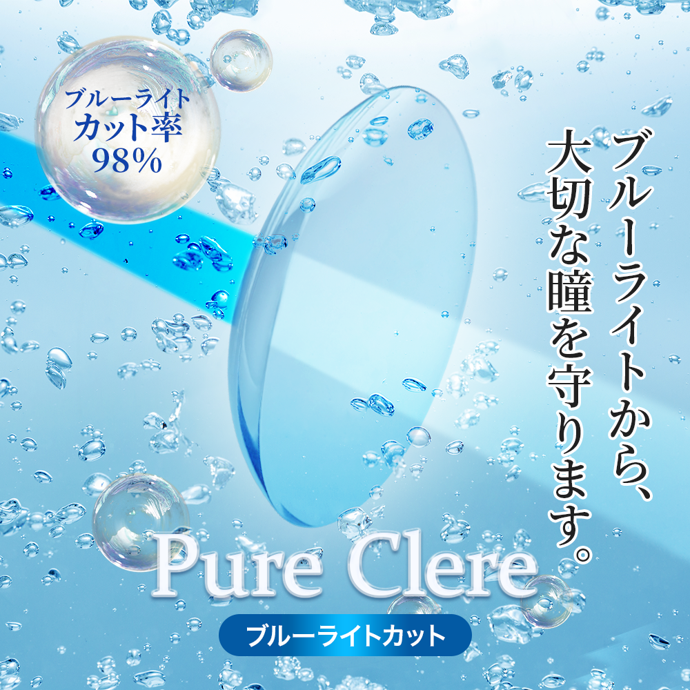

コンタクトレンズバナー
自主制作 / banner

About
架空のコンタクトレンズバナーを制作しました。
製品の特長である「ブルーライトカット機能」が一目で伝わるビジュアルを意識して制作した、架空のコンタクトレンズバナーです。
ブルーのライトがレンズを通ることで白いライトに変わる演出を取り入れ、カット効果を直感的に表現しました。
また、コンタクトレンズで重視される「潤い感」を演出するため、水中の泡をモチーフにした背景を採用し、みずみずしく清潔感のある印象に仕上げています。
Tools
Photoshop,Illustrator
Schedule
約6時間
← Worksへ戻る